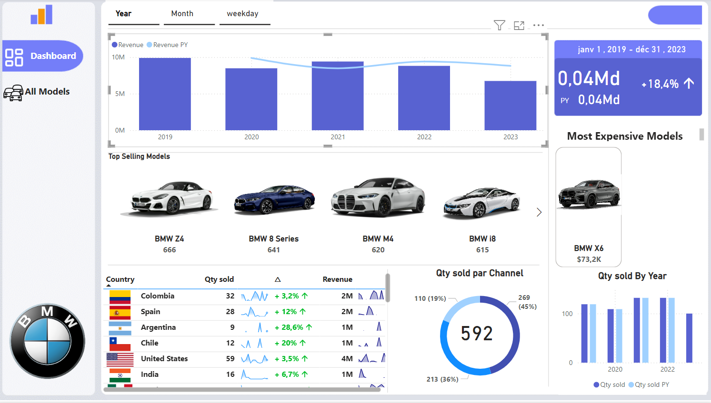

Apartment Price Analysis and Prediction
-Conducted analysis and prediction of apartment sale prices in Greater Tunis using the CRISP-DM methodology.
-Preprocessed data with Python, pandas, and NumPy.
-Developed regression models with scikit-learn, visualizing results in Jupyter Notebook.
View Code

Decision Support System for Supply Chain Analysis
- Extracted, transformed, and loaded data into a data warehouse.
- Designed interactive dashboards and reports, enhancing analysis with advanced machine learning techniques.
View Code
Sentiment analysis
- Conducted sentiment analysis on tweets using a dataset from Kaggle.
- Preprocessed data using Python, pandas, and NumPy to clean and prepare the tweets for analysis.
- Developed and trained sentiment classification models using scikit-learn.
- Evaluated model performance using metrics such as accuracy, precision, recall, and F1-score.
- Visualized results and model performance in Jupyter Notebook.
View Code
Automating WhatsApp Replies with Selenium
- Setting up Selenium to automate interaction with the WhatsApp web interface.
- Using the Gemini API to analyze incoming messages and generate appropriate automatic responses.
- Developing a script to automatically respond to WhatsApp messages based on the responses generated by the Gemini API.
- Implementing a system to log all conversations in a text file for later analysis or tracking.
View Code
Automated B2B Data Scraping Tool Using Selenium
- Develop an automated tool to scrape and collect B2B investor information from the AngelMatch website.
- Store the extracted data in CSV files, organized by country.
View Code

BMW Sales Dashboard
-Designed and developed a dynamic BMW Sales Dashboard using Power BI to visualize sales data and performance indicators.
-Imported, cleaned, and modeled BMW sales data for optimized dashboard performance using Power Query and data modeling techniques.
-Created interactive visualizations, including charts and KPIs, to present insights, enabling data-driven business decisions.
View Code

Nutri-Score Analyzer
-Developed a decision-support application to evaluate the Nutri-Score of food products based on nutritional data, leveraging data analysis and machine learning to promote healthier eating choices.
-Data Collection: Extracted nutritional data from Open Food Facts.
-Data Cleaning: Processed missing values, handled outliers, and split data into training and testing sets.
-Exploratory Data Analysis: Analyzed correlations and performed statistical tests (ANOVA, PCA).
-Predictive Modeling: Developed machine learning models for Nutri-Score prediction, optimized for accuracy and performance.
-Model Evaluation: Validated model performance and refined predictions.
-Deployment: Developed an application to predict Nutri-Scores, aiding informed dietary choices.